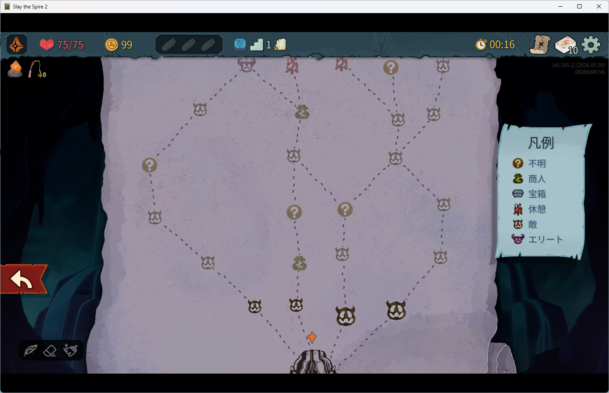
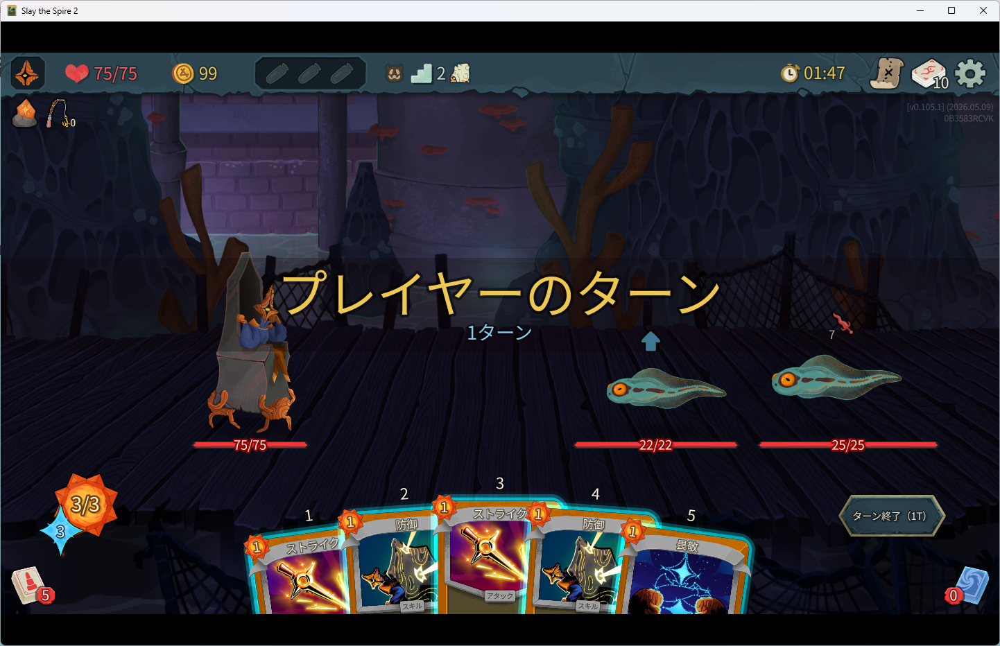
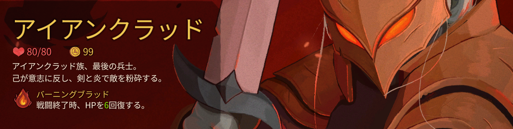
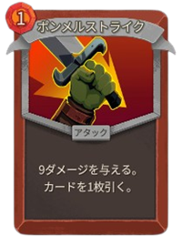
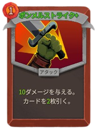

『Slay the Spire 2』は、カードゲームの戦略性とローグライクの中毒性を組み合わせたデッキ構築型ゲームです。
プレイヤーは毎回変化するダンジョンを進みながらカードを集め、自分だけのデッキを作り上げて敵と戦います。
戦闘では「どのカードを使うか」「どのルートを進むか」といった判断が重要で、プレイするたびに異なる戦略を楽しめるのが大きな魅力です。
前作『Slay the Spire』で高く評価されたゲーム性を引き継ぎつつ、新キャラクターや新カード、新たなシステムが追加され、さらに奥深い駆け引きが楽しめる作品となっています。
カードゲーム好きはもちろん、やり込み要素のあるローグライク作品が好きな人にもおすすめの注目タイトルです。
『Slay the Spire 2』では、毎回変化するマップを進みながらカードを集め、自分だけのデッキを作っていきます。


左の画面はゲーム内でのマップです。マップには敵やイベント、ショップなどのアイコンが表示されており、進むルートによって攻略方法が変化します。
右の画面は実際の戦闘画面です。ここではカードの効果や、敵の行動、自分の体力（HP）を常に管理し、敵の攻撃に合わせて防御するか、攻撃を優先するかなど、状況判断が重要になります。

アイアンクラッドは、初心者でも扱いやすいキャラクターです。
全キャラクターで一番体力が高く
戦闘終了時にHPを６回復することができるので、非常に安定した攻略ができます。
詳しい立ち回りはこちら！
これがあると強い！
汎用性や突破力などを加味したおすすめカード紹介です。

